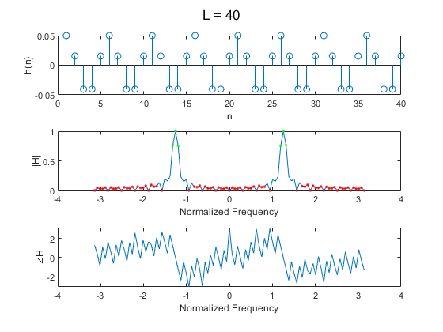
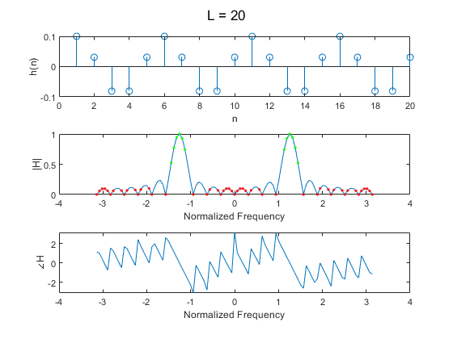
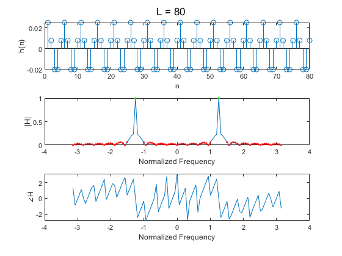
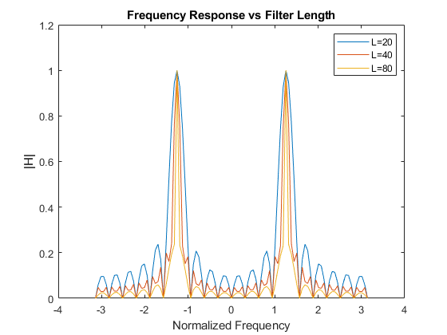

Contents
4.1: Simple Bandpass Filter Design
h[n] = 2/L*cos(w_c*n) where 0 <= n < L
clear L = 40; h = zeros(1,L); w_c = 0.4*pi; for n=0:L-1 h(n+1) = 2/L*cos(w_c*n); end figure; subplot(3,1,1) stem(h); xlabel("n") ylabel("h(n)") w = -pi:pi/50:pi; % a: Obtain frequency response H_40 = freqz(h,1,w); %H_dft = fftshift(fft(h,length(w))); subplot(3,1,2) plot(w,abs(H_40)); xlabel("Normalized Frequency") ylabel("|H|") subplot(3,1,3) plot(w,angle(H_40)); xlabel("Normalized Frequency") ylabel("\angleH") sgtitle("L = "+L) % b: Identify passband on the 0.5 level subplot(3,1,2) hold on passband = find(abs(H_40)>0.5); stopband = find(abs(H_40)<0.1); for i=1:length(passband) plot(w(passband(i)),abs(H_40(passband(i))),'.',"Color",'g') end for i=1:length(stopband) plot(w(stopband(i)),abs(H_40(stopband(i))),'.',"Color",'r') end % c: Different filter lengths
L=20
L = 20; h = zeros(1,L); w_c = 0.4*pi; for n=0:L-1 h(n+1) = 2/L*cos(w_c*n); end figure; subplot(3,1,1) stem(h); xlabel("n") ylabel("h(n)") w = -pi:pi/50:pi; % a: Obtain frequency response H_20 = freqz(h,1,w); %H_dft = fftshift(fft(h,length(w))); subplot(3,1,2) plot(w,abs(H_20)); xlabel("Normalized Frequency") ylabel("|H|") subplot(3,1,3) plot(w,angle(H_20)); xlabel("Normalized Frequency") ylabel("\angleH") sgtitle("L = "+L) % b: Identify passband on the 0.5 level subplot(3,1,2) hold on passband = find(abs(H_20)>0.5); stopband = find(abs(H_20)<0.1); for i=1:length(passband) plot(w(passband(i)),abs(H_20(passband(i))),'.',"Color",'g') end for i=1:length(stopband) plot(w(stopband(i)),abs(H_20(stopband(i))),'.',"Color",'r') end
L=80
L = 80; h = zeros(1,L); w_c = 0.4*pi; for n=0:L-1 h(n+1) = 2/L*cos(w_c*n); end figure; subplot(3,1,1) stem(h); xlabel("n") ylabel("h(n)") w = -pi:pi/50:pi; % a: Obtain frequency response H_80 = freqz(h,1,w); %H_dft = fftshift(fft(h,length(w))); subplot(3,1,2) plot(w,abs(H_80)); xlabel("Normalized Frequency") ylabel("|H|") subplot(3,1,3) plot(w,angle(H_80)); xlabel("Normalized Frequency") ylabel("\angleH") sgtitle("L = "+L) % b: Identify passband on the 0.5 level subplot(3,1,2) hold on passband = find(abs(H_80)>0.5); stopband = find(abs(H_80)<0.1); for i=1:length(passband) plot(w(passband(i)),abs(H_80(passband(i))),'.',"Color",'g') end for i=1:length(stopband) plot(w(stopband(i)),abs(H_80(stopband(i))),'.',"Color",'r') end
Overlay Frequency Responses
figure; plot(w,abs(H_20)); hold on plot(w,abs(H_40)); plot(w,abs(H_80)); hold off legend(["L=20","L=40","L=80"]); xlabel("Normalized Frequency") ylabel("|H|") title("Frequency Response vs Filter Length") % The width of the passband is inversely related to filter length (L). In % summary, longer filters lead to higher frequency selectivity.